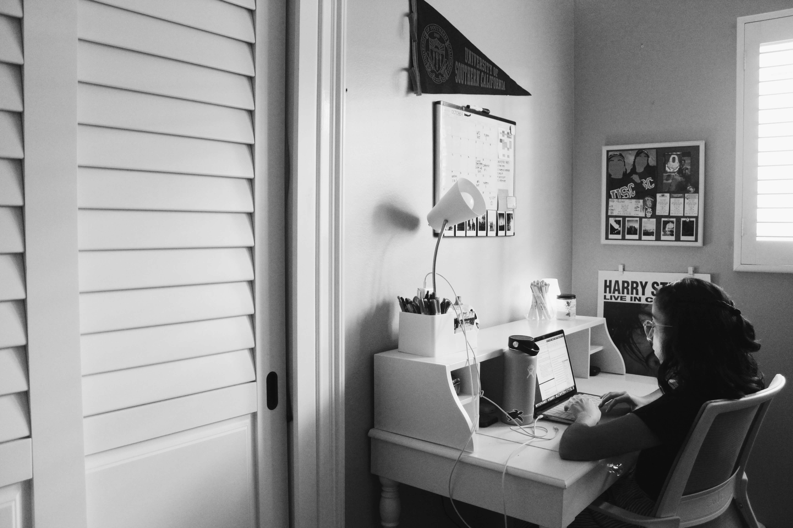
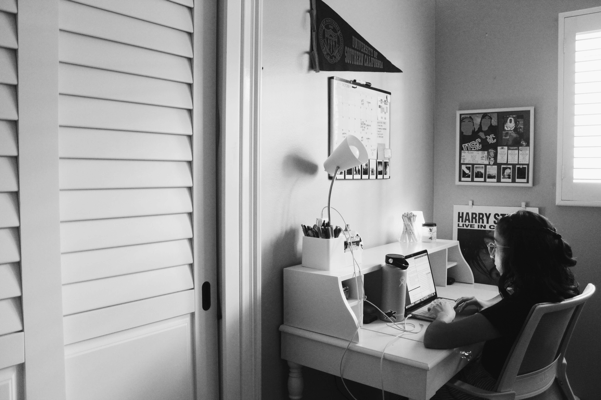
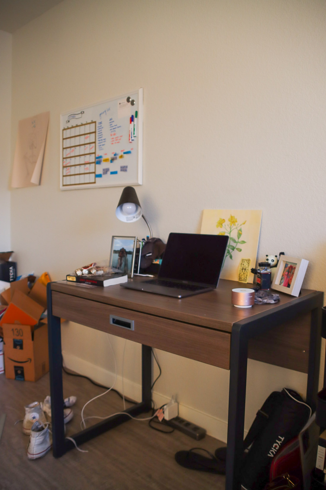
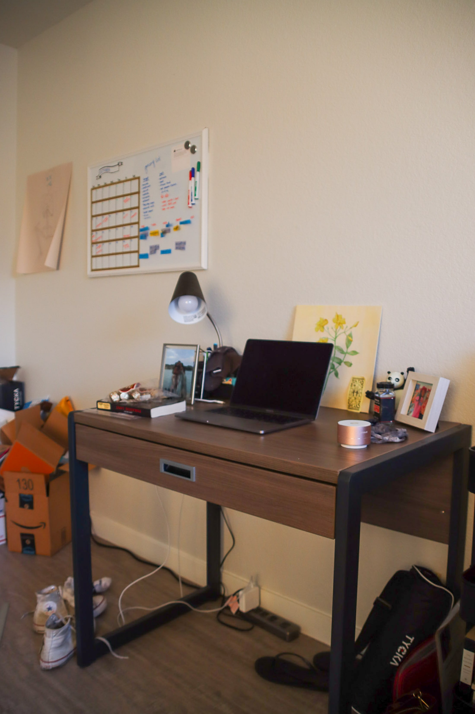

Physically
Restricted,
Distantly
Connected
When USC students were sent home for spring break last semester, they knew their college experience was about to change considerably. Many scrambled for temporary solutions, moving back to their childhood homes or finding a cheap place in the greater Los Angeles area. While students struggled as interactions quickly shifted to tablets and computers, President Carol Folt’s announcement that classes would primarily be online for the Fall semester confirmed that these makeshift fixes would become another disappointing reality. Times looked bleak for a true college experience.
However, as students have adapted to the unusual rhythm of attending classes from home, these unsettling circumstances have become less noticeable. Acting in a chaotic craze somewhat similar to that of people walking from building to building on USC’s campuses, students are still moving from Zoom meeting to the next across numerous time zones each busy day. Social interactions have remained strong through socially distant hangouts and late night FaceTime calls. Living conditions have been altered; study spaces have been forged in small bedrooms and on dining room tables, and some have discovered newfound freedoms as they take up shop in Airbnbs with friends.
Through the chaos and unfortunate circumstances, USC students have continued to persist. The photos below, taken by Daily Trojan photographers on campus, in the L.A. area, in the Pacific Northwest or internationally, showcase that although students are not physically together, we’re still united virtually.
My name is Celine Vazquez and I’m currently a freshman studying biomedical engineering. Right now I am in Montebello, California - the same place I’ve lived in for the past 18 years. I’m here right now because this is where my family is, and the place that makes the most sense for me to be financially. Ending my senior year of high school during the pandemic was extremely challenging. I had curated this idea of what I thought my senior year would be like - celebrating college acceptances, getting to walk the graduation stage, and saying goodbye to all of my classmates. Things didn’t work out the way I had planned, and I’m now going through my first semester of college online. It’s been an interesting experience, to the say least. Making friends and connections with professors has definitely looked different, but I’m so appreciative of the people I have met virtually so far. I’ve met a great group of friends that support me with chemistry labs and Zoom fatigue. I’m also super lucky my sister lives with me - she also goes to USC, and we’re in some of the same classes, which has been awesome. Although this whole experience has thrown a huge curve ball into what I thought 2020 would look like, it’s taught me to appreciate every day and every person that has come in and out of my life. These pictures showcase the little memories I’ve experienced during this first semester. Although this point in time is “unprecedented,” capturing special moments like these is what gets me through. These photos are a subtle reminder that when something goes terribly wrong, the only thing left to do is face it, and dive headfirst into what life has left to offer.

 



My name is Sarah Hendartono and I am a freshman majoring in journalism! I’m from around Dallas, TX but I moved out to Los Angeles this semester to get out of my small Texas suburb and have a little bit of independence. With this being my first semester at USC, my college experience looks a lot different than I thought it would. I wouldn’t have imagined that with my first time stepping on campus as a student, it would be almost completely empty. My only perception of campus now is blocked off areas and signs reminding people to practice social distancing. All my classes are online so I usually spend most of my time in my little workspace and having to meet with study groups over Zoom. I at least try not to stay completely cooped up in my apartment by going out to the Village to study, going on walks with my roommate or taking the occasional trip downtown with my friends.

 



My name is Sarah Cortina, and I’m from the Chicago suburbs. I am a sophomore transfer student. I spent my freshman year abroad in Paris, France, studying at the American University of Paris. As I was part of the Trojan Transfer Plan, I decided to sign an apartment lease early, and signed a lease at University Gateway in winter of 2019. Thus, as I remained tied to my lease, I decided to move to LA and take classes remotely from Gateway. This photo essay shows my weekly routine. During the weekdays, I take my classes, go on runs on campus, go to Trader Joes, and make dinner with my roommates, three girls I met in Paris. On the weekends, I typically do outdoor activities around Los Angeles, such as going to the beach or going to things such as the outdoor Silverlake flea market. It may not be the first semester at USC I pictured, but I’m incredibly grateful to be in Los Angeles and be living with my friends again.


I’m Charlie McCollum, a sophomore studying film & television production with an English minor. This fall I’m currently living alone by campus. The reason I came here was to continue finding ways to practice my major and find film opportunities outside of school. Though I knew this semester would be different, it certainly has challenged me in ways I didn’t realize back in August. Feelings of repetition and isolation in particular have been the hardest. However, that's not to say the experience has been a negative one. Through the time I’ve spent alone at my place, I’ve learned far more about myself and the world around me. I take far less for granted than I used to. I picked up meditation and prioritized my mental health. I'm improving day by day in the kitchen. I hope my photos capture the feeling of being in a surreal universe during an unprecedented time, along with a glimpse of how I’ve managed to function in this world myself.